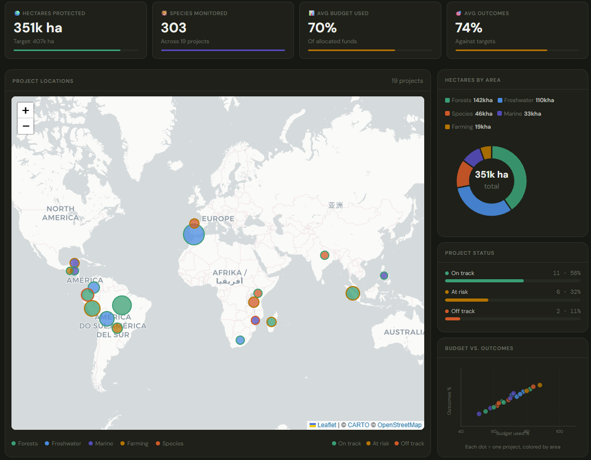
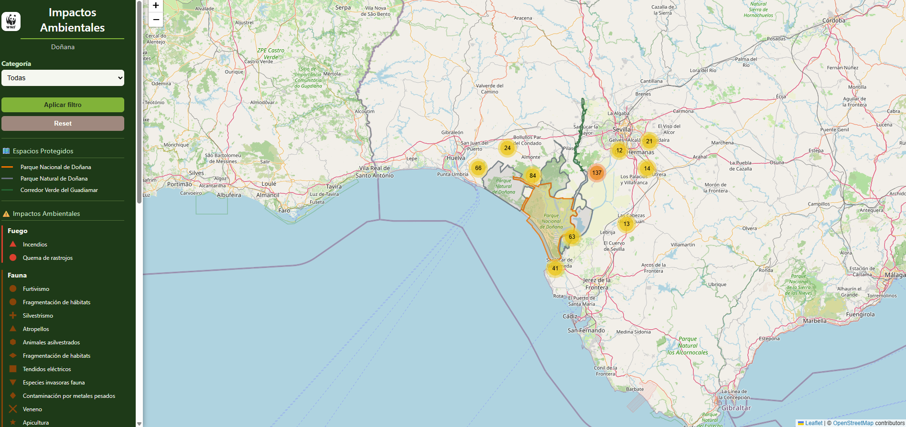
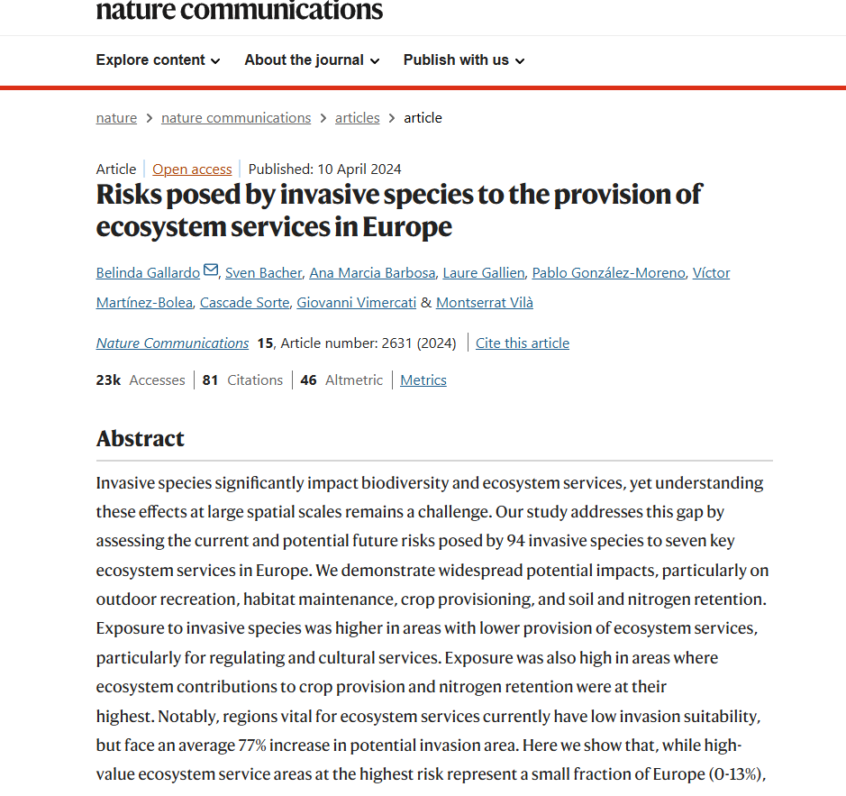
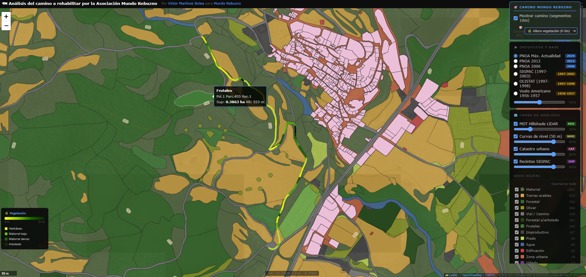
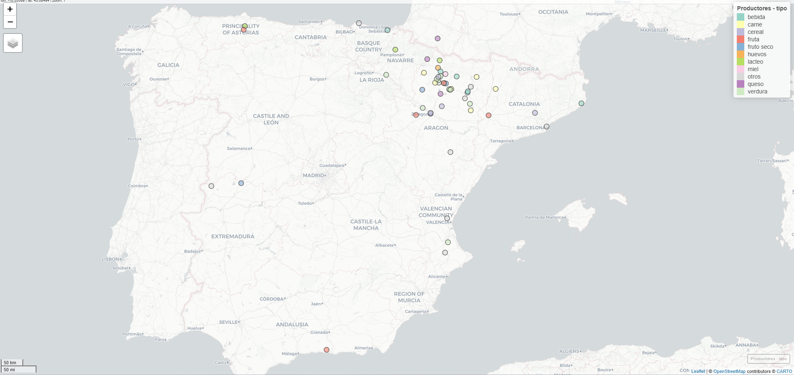
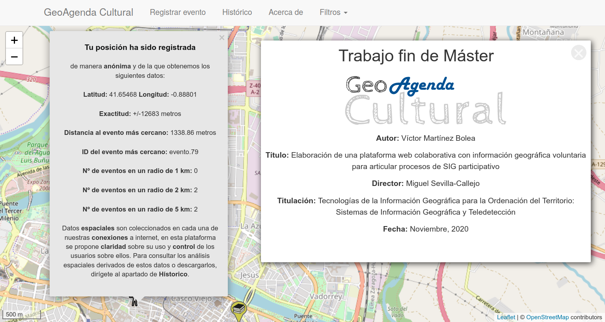

Análisis territorial · SIG · Evaluación ambiental
Selección de seis proyectos representativos que combinan análisis geoespacial, diseño de indicadores ambientales y cartografía aplicada. Desarrollados en contextos de investigación, consultoría y participación ciudadana.
Panel interactivo para el seguimiento de 19 iniciativas de conservación de WWF, clasificadas por áreas temáticas (bosques, agua dulce, marina, agricultura y especies).
Incluye visualización geográfica de proyectos, estado de avance, hectáreas protegidas, presupuesto ejecutado y resultados por área. Diseñado para análisis comparativo y comunicación de impacto ambiental.


Aplicación de webmapping interactivo para la visualización georreferenciada de impactos ambientales en el Parque Nacional de Doñana.
Incluye extracción automática de puntos de impacto a partir de documentos mediante Python y OpenCV, georreferenciación de los datos y visualización dinámica con Leaflet. Desarrollado en colaboración con WWF.
Participación como técnico GIS y coautor en investigación publicada en Nature Communications (2024). El estudio analiza el impacto de especies invasoras sobre los servicios ecosistémicos a escala europea.
Trabajo realizado en el CSIC (Zaragoza): análisis espacial avanzado, modelización estadística y generación de cartografía temática para dar soporte a las conclusiones del equipo investigador.


Cartografía interactiva para la asociación Mundo Rebuzno con el objetivo de identificar y recuperar los viales de dominio público del municipio de Murillo de Gállego (Huesca).
El mapa combina la delimitación de los viales con el análisis de densidad de vegetación (NDVI) a partir de imágenes Sentinel-2, permitiendo priorizar tramos con mayor necesidad de actuación. Herramienta directamente útil para la planificación de trabajos de recuperación.
Cartografía interactiva para el grupo de consumo de Ayerbe (Huesca) con la localización georreferenciada y los datos de contacto de todos los proveedores locales que abastecen al grupo.
La herramienta facilita la gestión del circuito corto de distribución, permite visualizar la cobertura territorial de los productores y sirve como referencia para nuevos miembros del grupo y potenciales proveedores.


Sistema para la recogida, gestión y visualización de datos geoespaciales de agenda cultural y eventos, con enfoque de ciencia ciudadana.
Integra APIs externas, almacena los datos en PostGIS y los visualiza en un mapa interactivo con Leaflet. Desarrollado íntegramente como proyecto propio, demuestra capacidad para construir flujos de datos espaciales de principio a fin.